What if instagram had features that promoted mental health? What if they had a place that you could go when the app became overwhelming? This is the premise of Safe Space, a reimagining of instagram that makes it more inclusive.
The brief was to assess a current experience, identify the biases involved in it’s design and redesign the experience to be more inclusive.
On this project I learned how to be more cognizant of the biases involved in design and how designing for accessibilty improves the experience for all users in the long run.
To test my theory I conducted a basic qualitative research study on instagram where I asked a simple question. Has Instagram ever stressed you out / made you feel FOMO.
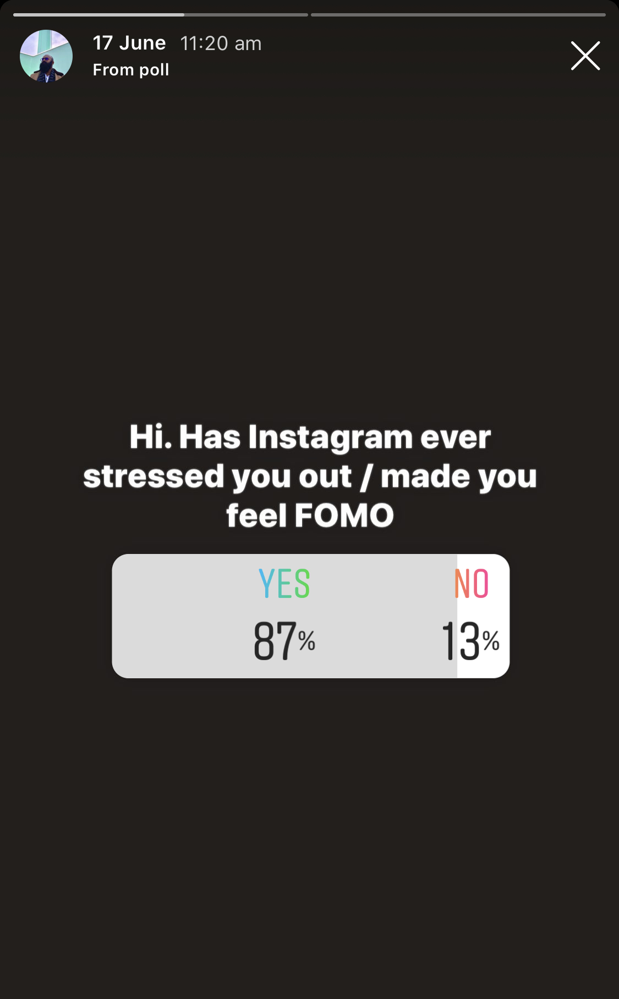 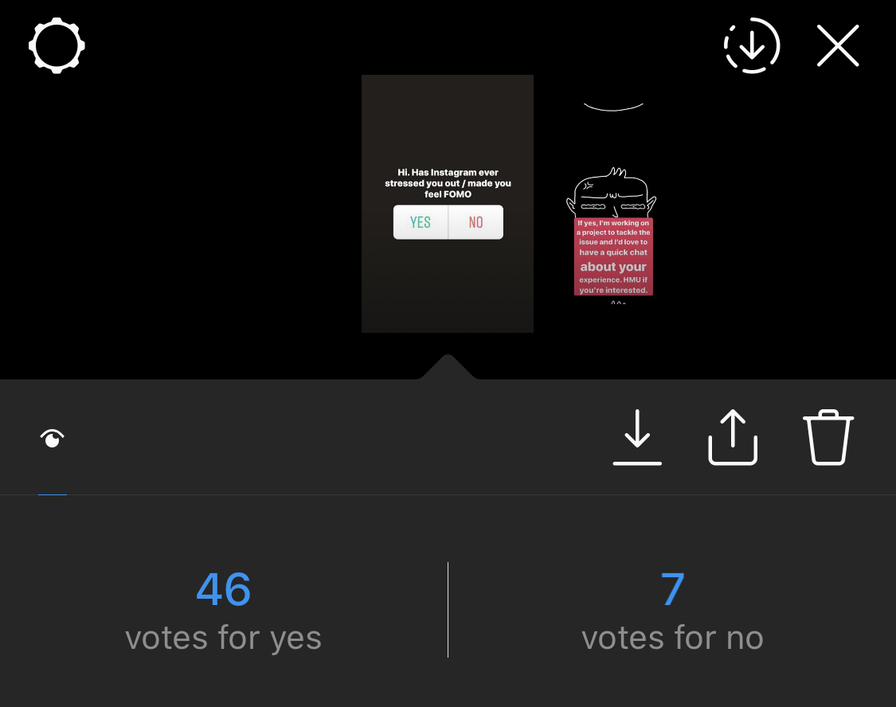Of the instagram respondents I reached out to 8 people, some of whom had been dealing with anxiety and some had no mental health issues but still found instagram overwhelming at times.
For this project I chose to not create personas in order to solve for the main insights I recieved from my interviews. These were -
I started initially with the idea to have a way to filter out certain people’s posts to avoid FOMO. But after my interviews, I realised that the problem went further than just FOMO. So I sketched out a concept to address the insights I got from users.
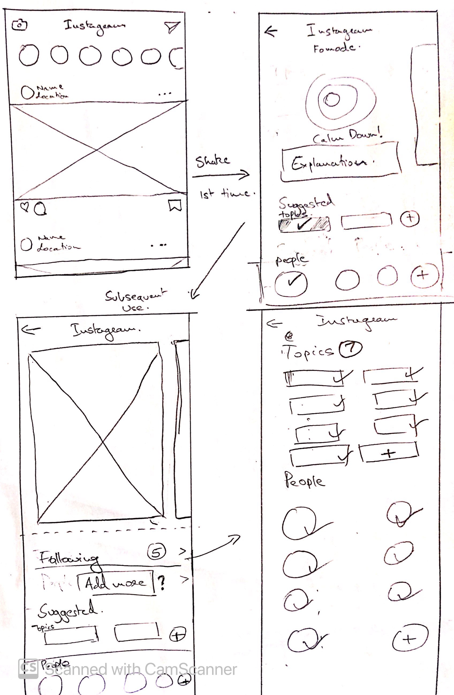The process of sketching led me to various implementation options and after a few iterations I wireframed the concept to try and visualise the user journey.
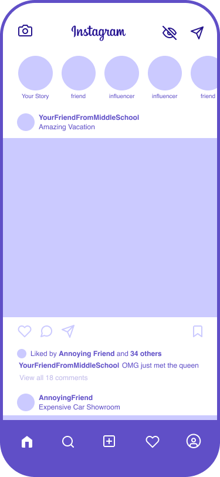 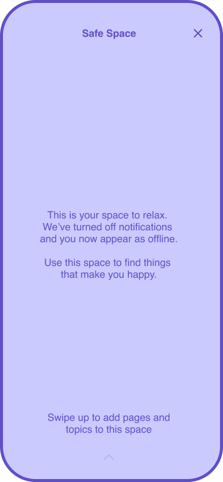 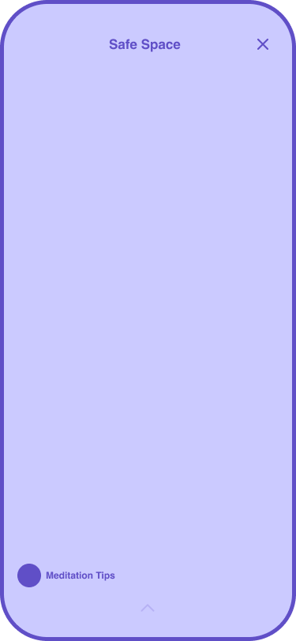 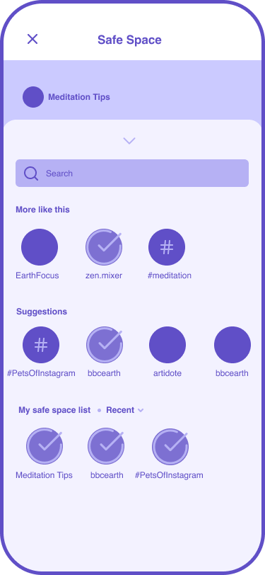I visually mocked up the core flow for first time users of the happy place feature, how they would add pages, and for returning users I mocked up how it would look like to use and manage their Safe Space.
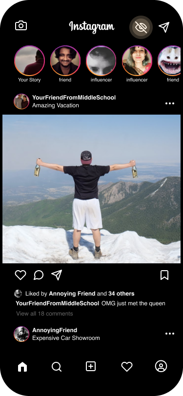 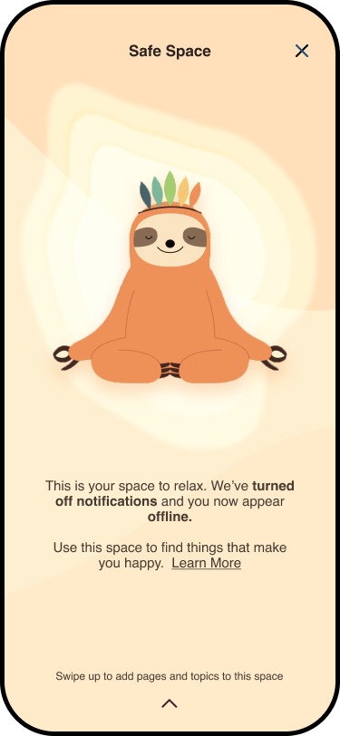 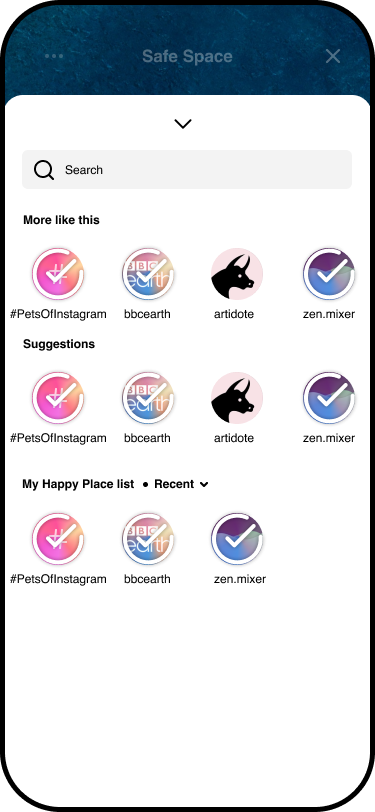 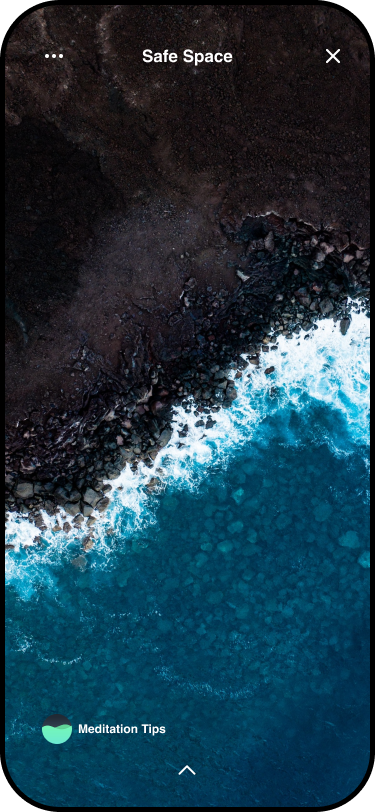We refined our sketches and began to wireframe out the features while tweaking the user flows and the design as we went.
Once we were confident that the app was easy enough for users to use, we finalised the wireframes and documented the interactions.